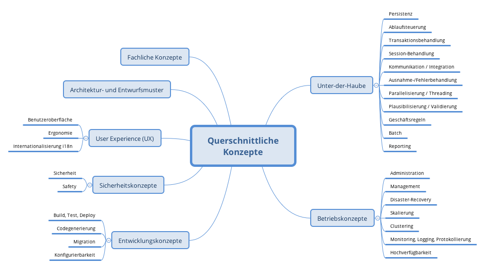

Querschnittliche Konzepte
|
Inhalt
Dieser Abschnitt beschreibt übergreifende, prinzipielle Regelungen und Lösungsansätze, die an mehreren Stellen (=querschnittlich) relevant sind. Solche Konzepte betreffen oft mehrere Bausteine. Dazu können vielerlei Themen gehören, beispielsweise:
Motivation
Konzepte bilden die Grundlage für konzeptionelle Integrität (Konsistenz, Homogenität) der Architektur und damit eine wesentliche Grundlage für die innere Qualität Ihrer Systeme. Manche dieser Themen lassen sich nur schwer als Baustein in der Architektur unterbringen (z.B. das Thema „Sicherheit“). Hier ist der Platz im Template, wo Sie derartige Themen geschlossen behandeln können. Form
Kann vielfältig sein:
Struktur
Eine mögliche (nicht aber notwendige!) Untergliederung dieses Abschnittes könnte wie folgt aussehen (wobei die Zuordnung von Themen zu den Gruppen nicht immer eindeutig ist):
 |